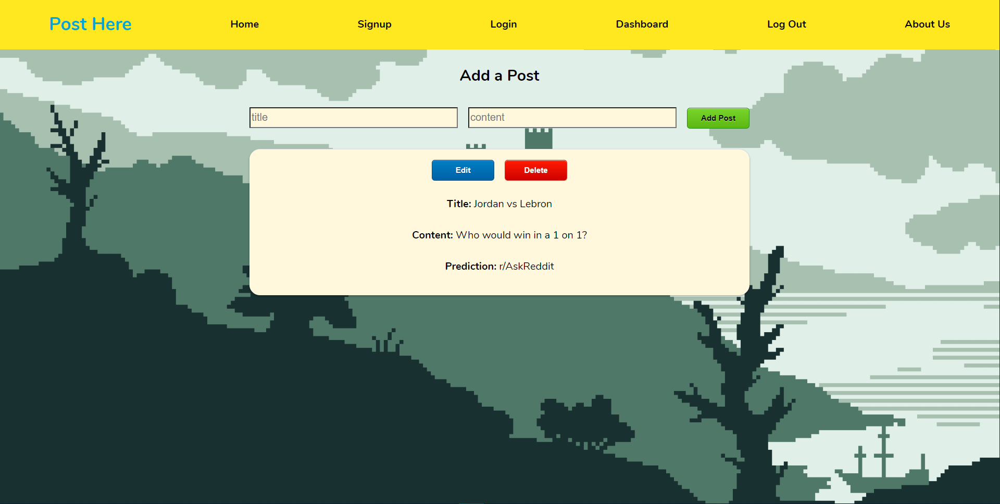

Projects
Bridges to Prosperity
A map-based web app used to visualize the impact of bridges in Africa.

Responsibilities:
- Refactored existing codebase to enhance the app’s current design
- Translated stakeholder’s vision into an actionable plan
HTML5
CSS3
JavaScript
React
Post Here: The Subreddit Recommender
Post Here App is a single page application that allows users to save a sample subreddit post and receive a recommendation on the best subreddit to create the submission, using machine learning.
Responsibilities:
- Collaborated cross-functionally with 1 backend and 3 data science engineers
- Managed a front-end remote team of 2 React.js engineers and 1 web developer
- Designed app that connected to 2 separate APIs to perform CRUD and machine learning predictions
HTML5
CSS3
Less
JavaScript
React
How-To App
How-To App is a learning platform that allows users to find how to guides on various topics.

Responsibilities:
- Collaborated with a remote team of 8 engineers
- Designed a database utilizing multiple development environments
- Utilized Jest to create 35 automated unit tests
Node.js
PostgreSQL
API
VR Fundraiser Platform
VRFP is a fundraiser platform that allows underrepresented groups the ability to submit virtual reality fundraising projects.

Responsibilities:
- Learned how to implement GSAP animations
- Created forms logic for submitting projects
HTML5
CSS3
Less
JavaScript
React